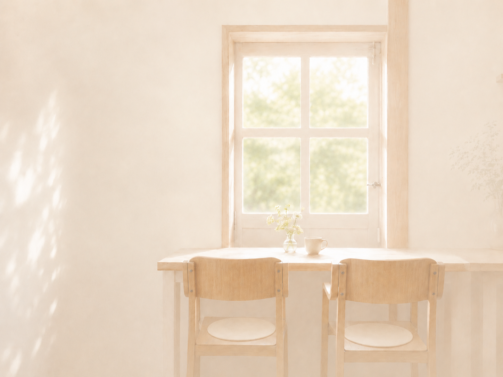
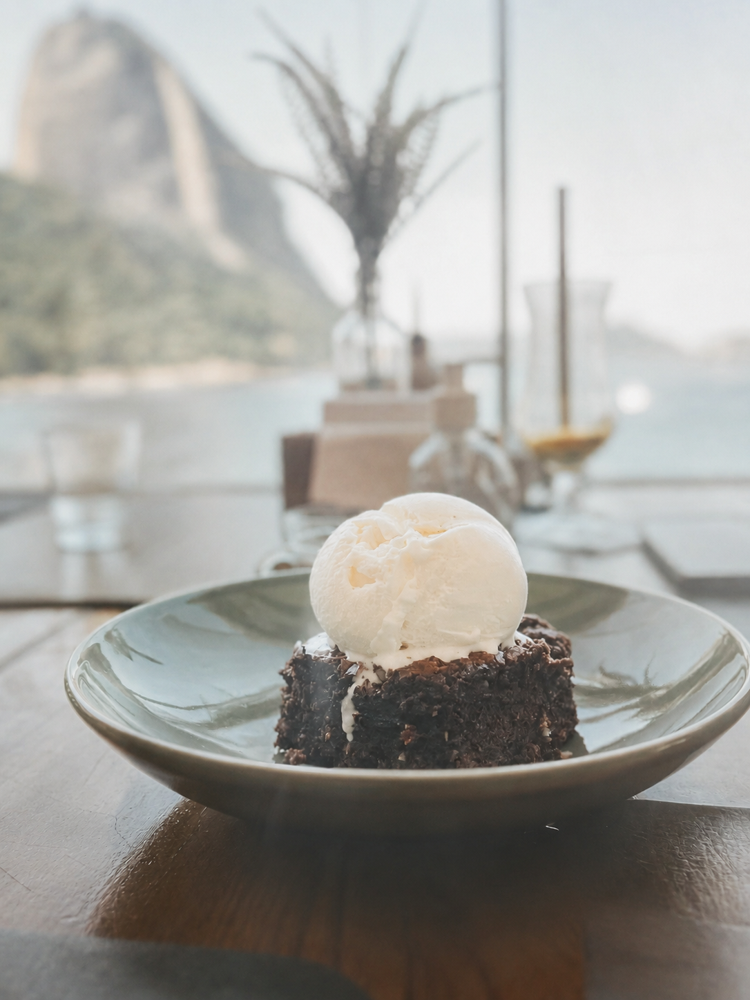
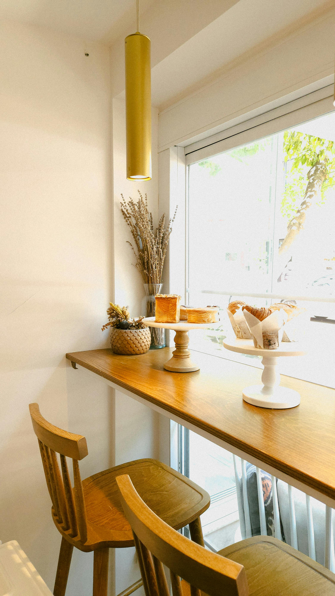
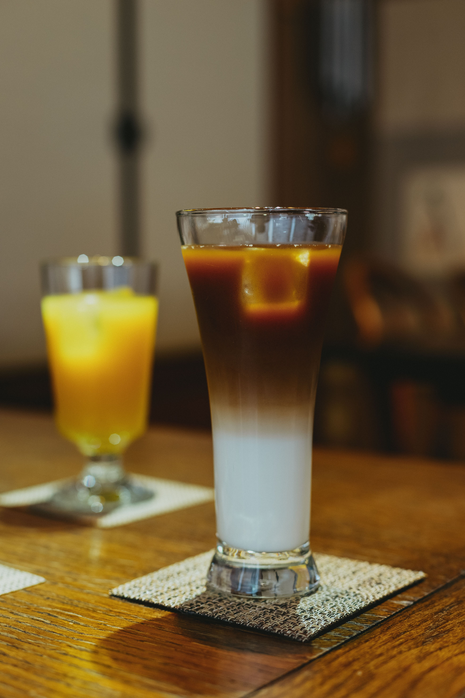
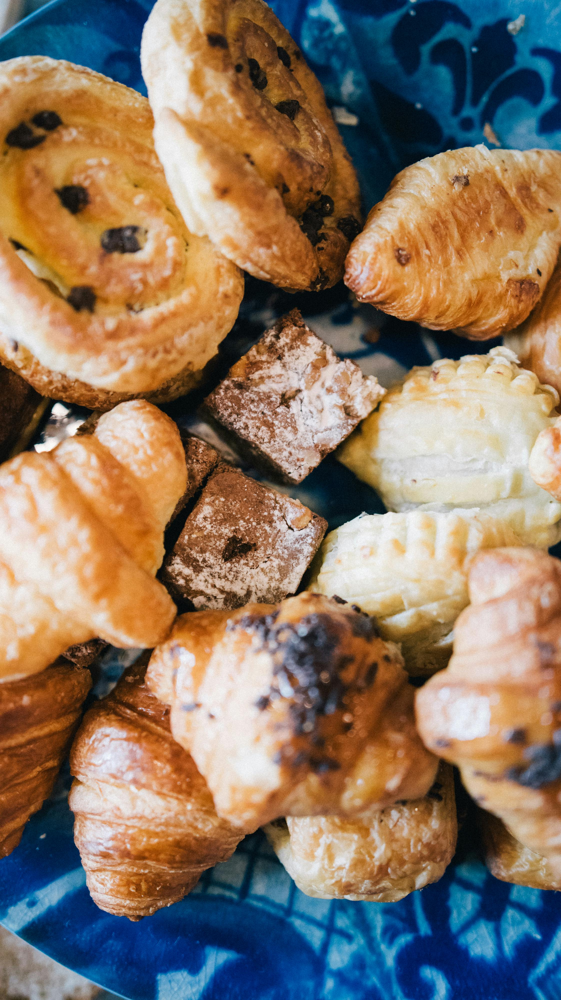
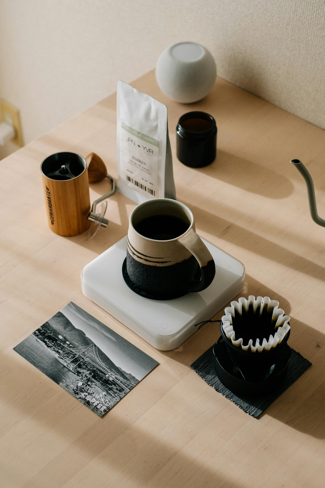
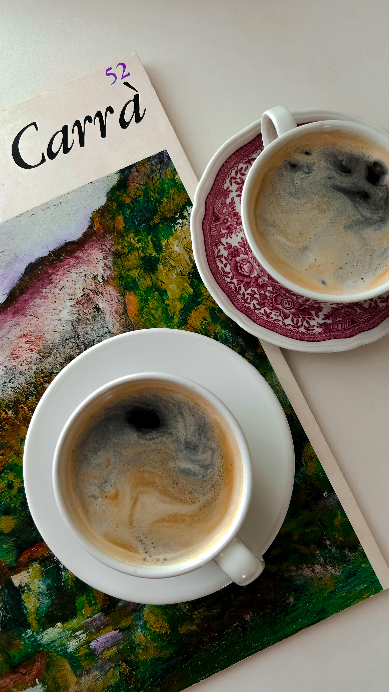

Summer FIKA Stand
RO FIKA
A small pause in a summer afternoon.
夏の午後に、少しだけ立ち止まるためのFIKA。
Cold drinks, baked sweets, and a window full of light.

Concept
A window full of light.
RO FIKA is a small summer cafe for quiet pauses.
Cold drinks, baked sweets, and a window full of light.
夏の午後、
冷たいドリンクと焼き菓子をそばに置いて、
少しだけ呼吸をゆるめるための場所。

FIKA Time
FIKA TIME
a quiet rhythm for a summer afternoon.
飲んで、食べて、窓の外を少し眺める。
- drink
- taste
- look outside
- stay
stay a little longer by the window.
Gallery
GALLERY
small scenes by the window.
窓辺に残る、午後の小さな景色。




